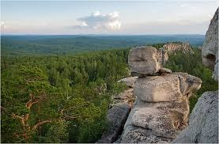
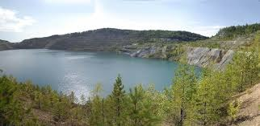

В нескольких минутах езды от Верхнего Уфалея находится потрясающее озеро Аракуль, собравшее вокруг себя целое скопление природных достопримечательностей, главной из них является Шихан. Он представляет собой удивительный гребень на горе Аракуль. Здесь древние стоянки людей, датирующиеся эпохами раннего железного и бронзового веков, причудливые углубления в каменных глыбах, неповторимы рельеф, созданный благодаря многолетнему труду ветра и воды. Шихан – отличное место для создания целой серии уникальных фотографий, и каждый год сюда приезжают сотни туристов. Чтобы не остаться на улице, лучше заранее забронировать квартиры на сутки в Верхнем Уфалее. 
Также вблизи города можно посетить красивое и огромное Нижнеуфалейское водохранилище или оценить масштаб «Черемшанских» карьеров, на дне которых спрятались два очень необычных озера: одно – ярко-зеленое, другое – ярко-синее. В самом городе рекомендуется посетить Историко-краеведческий музей, в котором можно увидеть интересные исторические документы, орудия труда и старинное оружие местных жителей. 